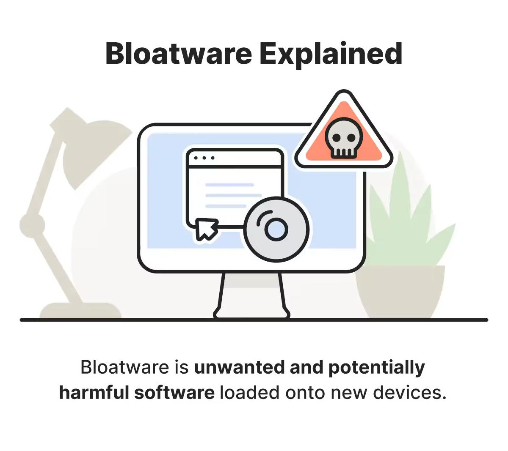
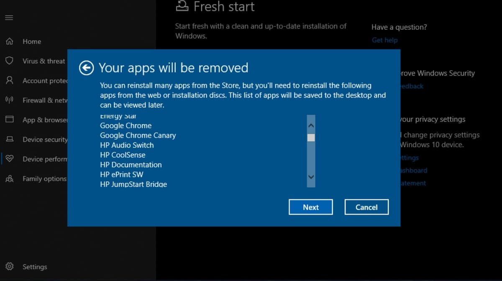

Day 5
Debloating is like giving your device a clean-up by removing apps, features, or files you don't really need. This helps your smartphone, computer, or server run faster, use less memory, and stay more secure. It’s a simple way to make your system run smoother and feel more efficient!.
One notable example of bloating occurred with Windows 10. Microsoft pre-installed a range of apps that many users considered unnecessary, such as games and trial software. In 2018, Microsoft faced backlash for including apps like "Candy Crush Saga" and other "bloatware" on devices. These apps took up valuable system resources, reducing performance and frustrating users, especially those on older or lower-end devices.
This led to many users manually removing these apps, and several tutorials and software programs were developed to help people clean their systems. It highlighted the importance of debloating and the consequences of bloated systems on both user experience and security.
Failing to debloat a system leads to several risks, including: